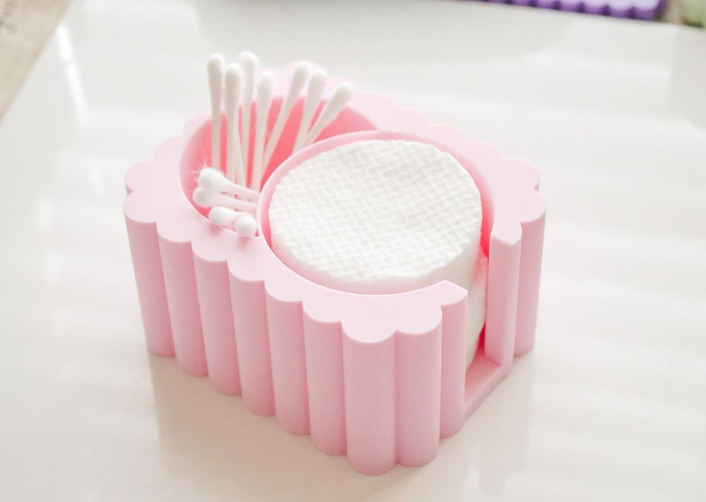
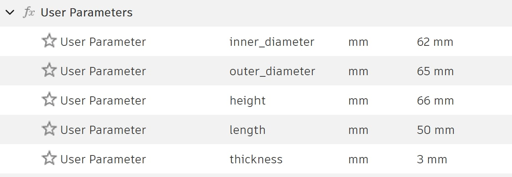
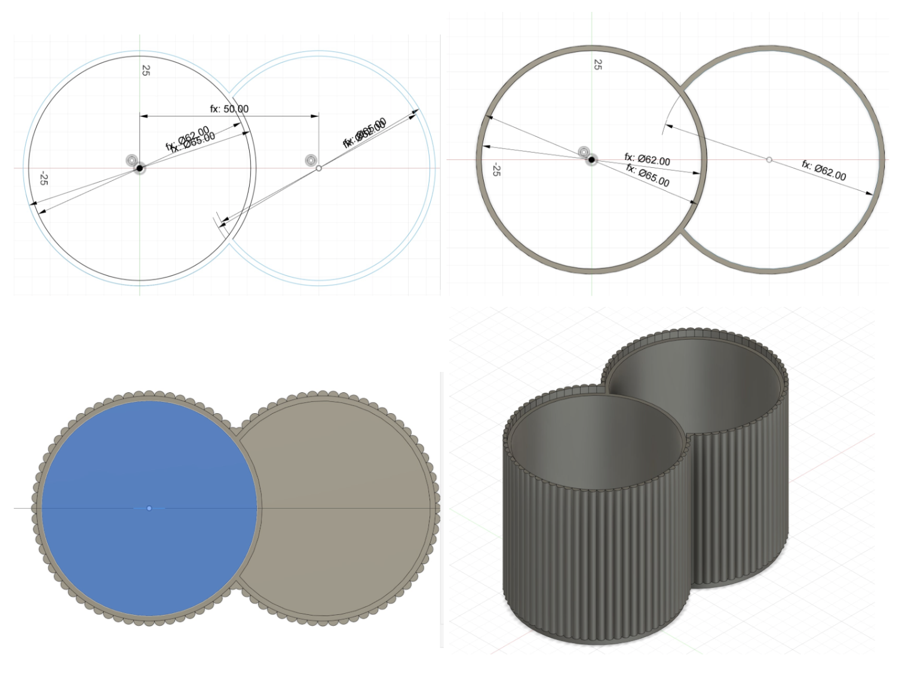
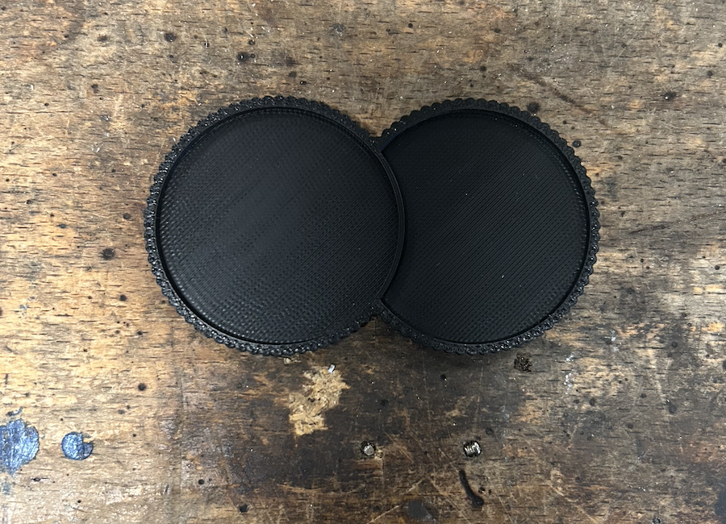
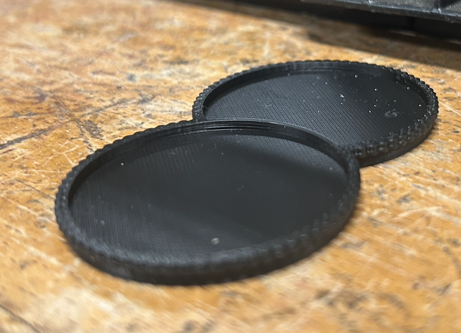

Verkefni 3
Markmið verkefnisins er að hanna lítið módel fyrir 3D prentun sem ekki væri hægt að framkvæma með frádráttarframleiðslu (additive vs subtractive). Einnig átti að framkvæma prófanir á 3D prentara til að ákvarða hönnunarreglur og skorður áður en módelið var prentað. Að lokum átti að 3D skanna einhvern hlut og útskýra hvað ég lærði af ferlinu.
3D prentun
Í þessu verkefni áttum við að hanna lítið módel fyrir 3D prentun sem ekki væri hægt að framkvæma með frádráttar framleiðslu (additive vs subtractive). Við áttum að hanna og framkvæma prófanir á 3D prentaranum til að ákvarða hönnunarreglur og skorður áður en módelið er prentað. Að lokum áttum við að prenta hlutinn (max 100g af plasti skv. slicer) og 3D skanna einhvern hlut.
Ég ákvað að hanna lítið geymslubox fyrir bómullarskífur og Q-tips. Hugmyndin var að gera box sem væri bæði nytsamlegt og fallegt, en um leið nýta möguleika 3D prentunar til fulls.

Mynd 1: Pinterest mynd af módelinu sem líkt er eftir
Boxið var hannað þannig að það inniheldur:
- Tvö aðskilin hólf
- Bogadregna innri veggi
- Innbyggt lok
- Holrými og flókna ytri veggi
Þessi hönnun væri ekki einföld í framkvæmd með frádráttarframleiðslu. Þó að hún sé ekki algjörlega ómöguleg, myndi hún vera bæði flókin og óhagkvæm að framleiða með hefðbundnum fræsiaðferðum. Ástæðurnar eru meðal annars þær að hönnunin inniheldur innri holrými sem ekki er hægt að nálgast með fræsara. Einnig eru yfirhangandi form sem myndu líklega krefjast þess að hluturinn væri framleiddur í mörgum smærri hlutum og síðan settur saman eftir á.
Ég valdi eftirfarandi parametra út frá því að þvermál bómul skífa sé u.þ.b. 60 mm. Parametrar eru hér fyrir neðan.

Ég passaði að hönnunin myndi ekki fara yfir 100g samkvæmt slicer viðmátaði og reiknaði því út hvað mín hönnun mætti u.þ.b. vera stór með formúlunni: V_ring = πh(R_out^2−R_in^2) og V_botn = πr^2t þar sem t er þykkt og h er hæð. Einnig þurfti að athuga rúmmál rifflana sérstaklega en það var gert með V_rifflur = (hπ(t/2)^2)/2 * number_of_rifflur. Einnig þyrfti að að reikna fyrir 1 og 2/3 úr hring þar sem boxið er sameinað úr tveimur hringjum.
Samtals fæst u.þ.b. 79.972 mm^3 en PLA = 1.24g/cm^3 þ.a. 79.97*1.24 = 99g. Sem er vissulega mjög tæpt. Svo til öryggis minnkum við hæð um 10mm til að vera örugg um að við séum innan marka. Loka útkoman er hér fyrir neðan í bútum og 3d mynd.
Heppilega var hæð boxins í parametrum þar sem ég endaði á að minnka hana til að vera örugg um að ég færi ekki yfir hámarks þyngd.

Mynd 3: Skref fyrir skref teikning í Fusion.
Þá var komið að því að setja boxið inn í PrusaSlicer til þess að ég gæti prentað það út. Ég byrjaði á því að hlaða niður PrusaSlicer héðan: PrusaSlicer. Ég hlóð niður Fusion 360 skjalinu inn í forritið og lagaði stillingar.
Áður en ég prentaði út hönnunina ákvað ég að gera prufuprentun til að átta mig betur á hvernig 3D prentarinn virkar og sjá hvort að rifflurnar prentist ekki vel út. Ég hlóð niður hönnunina í PrusaSlicer og skar svo 85% af boxinu, svo eftir stóð bara lítill standur. Ég minnkaði einnig hönnunina í 80% svo prentunin tæki styttri tíma. Prentunin tók 45 mín og var framvæmd án stuðningsefnis, með 15% infill.


Prufan kom vel út og ég var afskaplega ánægð svo ég ákvað að henda bara í 3D prentun á loka hönnuninni. Prentunin á lokahönnuninni tók rúmmlega 7 klukkutíma en það kom mjög vel út og ég var meira sátt en ég bjóst við.

3D skönnun
Fyrir 3D skönnunina notaði ég forritið Polycam. Forritið gerir 3D skönnun einstaklega einfalda. Ég ákvað að skanna fugl sem við eigum heima. Ég skoðaði mig ekki mikið um hvaða hluti væri best að 3d skanna en hafði fengið glögga athugasemd um að best væri einhversskonar stytta/hlutur sem hefði hafi ekki of mikil smáatriði.
Útkoman var frekar góð og ákvað ég því ekki að endurtaka skönnunina.